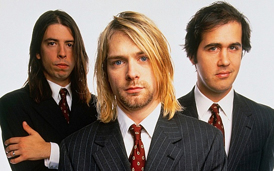
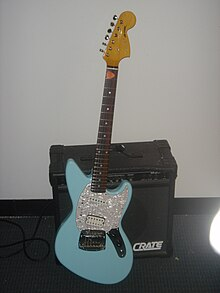
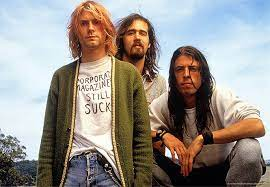
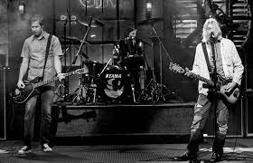
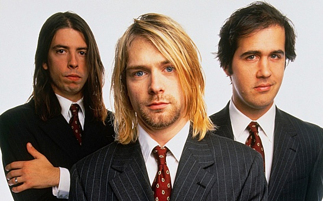
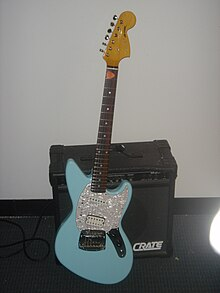
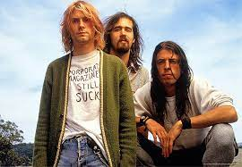
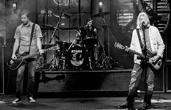

Biography
Биография
Курт Дональд Кобейн родился 20 февраля 1967 года в городе Абердин, штат Вашингтон, США. С ранних лет он проявлял интерес к музыке, научившись играть на пианино по слуху в юном возрасте. Родители Курта развелись, когда ему было девять лет, что глубоко повлияло на него.
В подростковом возрасте Курт столкнулся с разводом родителей и переездами из одного дома родственников в другой. В музыке он нашел утешение и начал играть на гитаре. В школе он сформировал несколько групп и в конечном итоге бросил учебу, чтобы полностью посвятить себя музыке.
В 1987 году Кобейн создал группу Nirvana вместе с басистом Кристом Новоселичем. Сырая, гранжевая музыка группы быстро завоевала популярность в андеграундной музыкальной сцене. В 1991 году Nirvana выпустила прорывной альбом "Nevermind", включающий в себя знаменитый хит "Smells Like Teen Spirit".
Несмотря на успех Nirvana, Кобейн боролся с давлением славы и боролся с зависимостью и депрессией. В 1992 году он женился на Кортни Лав, солистке группы Hole, и у них родилась дочь Фрэнсис Бин.
Трагически, борьба Курта с психическим здоровьем и зависимостью завершилась его смертью 5 апреля 1994 года в возрасте 27 лет. Его уход потряс мир музыки и оставил неизгладимый след в сердцах множества поклонников.
Наследие Курта Кобейна как музыканта и культурной иконы продолжает жить, и музыка Nirvana продолжает вдохновлять поколения поклонников по всему миру.
Songs
Песни
-
Smells Like Teen Spirit
Одна из самых известных песен Nirvana, "Smells Like Teen Spirit" стала гимном поколения 1990-х. Её агрессивные риффы, мощные тексты и динамичная мелодия олицетворяют дух гранжа.
-
Come As You Are
Эта песня, включенная в альбом "Nevermind", выделяется своим неповторимым звучанием и текстами, которые вызывают смешанные чувства. "Come As You Are" стала хитом и получила широкое признание критиков.
-
Lithium
Lithium — это одна из самых популярных и влиятельных песен Nirvana, она сочетает в себе характерный стиль группы с мощной мелодией и эмоциональным вокалом Курта Кобейна.
Photos
Фото
 






